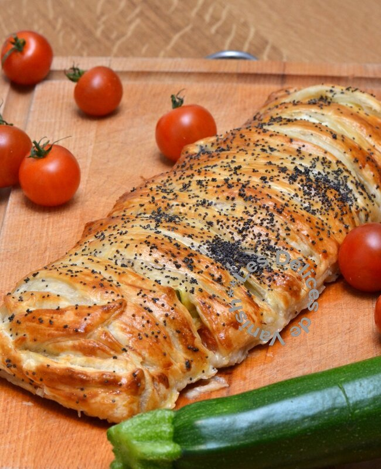

Tresse feuilletée tomate courgette jambon
Ingredients
×
- 1 courgette
- 15 tomates cerise
- 1 échalote
- sel
- poivre
- herbes de Provence
- 1 pâte feuilletée
- 3 tranches de jambon cru
- 2 grosses tomates
- 1 mozzarella
- lait
- graines de pavot

Préparation
Étape 1
Éplucher 1 courgette une bande sur deux et la couper en morceaux. Couper en deux 15 tomates cerise et émincer 1 échalote.
Étape 2
Blondir l’échalote, puis ajouter les tomates cerise, la courgette, du sel, du poivre et des herbes de Provence. Cuire 6min en remuant, puis égoutter dans une passoire.
Étape 3
Dérouler 1 pâte feuilletée et découper des lanières sur chaque côté, sans toucher le centre.
Étape 4
Disposer au centre 3 tranches de jambon cru en morceaux, les légumes, 2 grosses tomates en tranches, puis 1 mozzarella en rondelles.
Étape 5
Tresser : rabattre le haut de la pâte sur la garniture, puis croiser les lanières de gauche et de droite en alternance. Fermer en rabattant le bas.
Étape 6
Badigeonner de lait, parsemer de graines de pavot et cuire 20min à 180ºC.